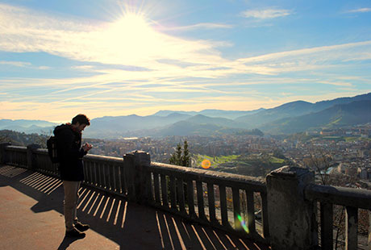
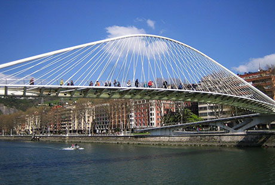
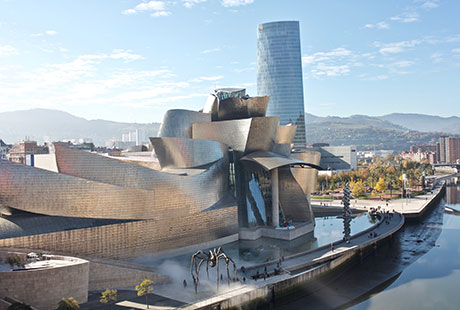
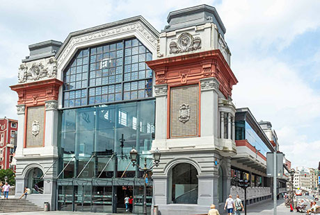
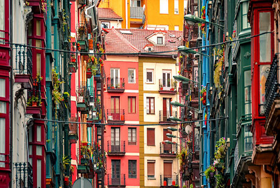

Las 5 mejores atracciones de Bilbao en un día
Al ser una ciudad chica, Bilbao puede recorrerse a pie sin necesidad de tomar el metro y en muy poco tiempo, lo que la hace un destino muy accesible. Si estás pensando visitar nuestra ciudad y tienes poco tiempo, esta guía es para ti.Hemos seleccionado las mejores atracciones para conocer Bilbao en tan solo un día.
-
Mirador de Artxanda
El Mirador de Archanda posee una vista impresionante de toda la ciudad de Bilbao y si se trata de un bonito día soleado y despejado, se puede ver el mar. Por eso, sin duda es una parada obligatoria que tienes que realizar cuando vayas de visita. El mejor horario es a primera mañana, para disfrutar la vista sin tantos turistas. Para subir a él, tomar el funicular que parte de la Plaza del Funicular, con un trayecto de unos 3 minutos de duración.
-
Puente Zubizuri
Luego, cruzaremos el Zubizuri, también conocido como “puente de Calatrava”, un puente peatonal del Paseo Campo de Volantín que cruza la ría del Nervión uniendo el barrio de Castaños con el Ensanche. Es obra del reconocido arquitecto Santiago Calatrava, de estructura arqueada, color blanco y con el suelo de cristal. Este último desató una polémica entre los bilbaínos, cuando descubrieron que el piso era muy resbaladizo, teniendo en cuenta el alto promedio de días lluviosos de la población vasca. Por eso, hoy en día, la pasarela está cubierta de una moqueta antideslizante. Con las Torres de Isozaki de fondo, se trata de una de las estampas míticas de la ciudad.
 -
Museo Guggenheim
El Museo Guggenheim Bilbao es un museo de arte contemporáneo diseñado por el arquitecto canadiense Frank O. Gehry. Casi inmediatamente después de su inauguración en 1997, el Guggenheim Bilbao se convirtió en una popular atracción turística, atrayendo turistas de todo el mundo. El edificio está cubierto por paneles de titanio tomando una apariencia diferente en función de la luz que se refleja en él. Observado desde el río, el Guggenheim parece un barco y los paneles de titanio se asemejan a las escamas de un pez. Estas dos características rinden homenaje a la importancia de la ría en el desarrollo económico de Bilbao.
-
Mercado de la Ribera
En pleno casco viejo, junto a la ría y cerca del puente de San Antón, encontramos el Mercado La Ribera, uno de los puntos de turismo más importantes para visitar en Bilbao. En su luminoso interior – gracias a sus grandes vidrieras – se alinean un sinfín de puestos de productos frescos de primera calidad. Aquí es donde encontrarás el secreto de la exquisita cocina vasca. ¡Aprovecha para almorzar!
 -
Las siete calles
Ahora sí, nos adentramos al barrio de las Siete Calles. Se denomina así porque el núcleo original de Bilbao estaba formado precisamente por siete calles: Somera, Artecalle, Tendería, Belosticalle, Carnicería Vieja, Barrencalle y Barrencalle Barrena. A partir de estas vías la capital de la región se fue expandiendo hasta adoptar la forma de hoy en día. En el centro se encuentra la plaza de Santiago dónde destaca la Catedral de Santiago. La catedral de estilo gótico fue construida entre finales del siglo XIV y principios del siglo XV. Aquí puedes encontrar diversos bares en los que probar los famosos pintxos.
Fin del recorrido
Hasta aquí un paseo que nos ha permitido conocer y disfrutar de los lugares más representativos de Bilbao y que nos ha transportado desde la Edad Media a la más fulgurante modernidad.